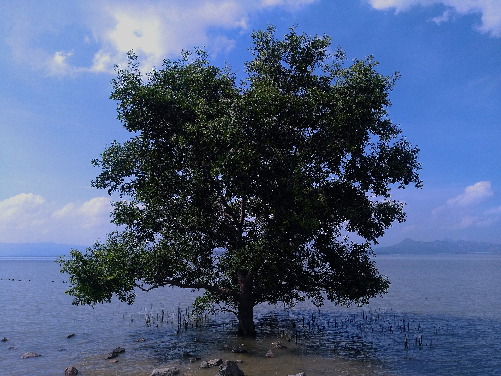

深圳湿地观察与物种档案
让每一次
让每一次
湿地相遇，
成为一张
生命卡片。
查看点位与当季目标，带着图鉴实地寻找。照片在当前设备完成物种辅助识别，并结合地点留下可信的观察记录。
2已收集物种
0已完成点位
2守护徽章
今日观测
退潮 16:40 · 候鸟活跃度高
REAL TILE MAP · OPENSTREETMAP福田红树林
当前地图焦点福田红树林22.51187, 114.04258 · 黑脸琵鹭限定
© OpenStreetMap contributors

当前任务
解锁红树林守护者
1 / 3查看目标、抵达点位、完成一次有效识别
MANGROVE VIEW 01 · 360° BIRDING
全屏观看
候鸟视角看深圳红树林
从候鸟高度观察红树林冠层、水道与潮间带。此模块为红树林生态沉浸式演示，使用 P4Panorama 的 Mangrove View 1 全景内容。
按住并拖动环视 · 支持全屏
SHENZHEN FIELD ATLAS
深圳湿地物种档案
观察不是占有。每一张点亮的卡片，都来自一次保持距离的真实相遇。
2/ 9 已发现
深圳湿地物种典藏 · 不限时开放
潮来潮往，滩涂上的每一次相遇，都值得被记住。
深圳湿地典藏 · 第一辑潮间万象
常驻典藏
收录深圳常见湿地物种。获取概率与保底规则均完整公示，重复藏品将转化为生态碎片。
0.99% SSR0 / 10 保底计数11 全系列藏品
10 次开启内必得 SSR 或典藏款；本池独立计数。
深圳湿地典藏 · 第一辑
立体藏品展室
4款已开放
湿地藏品展室
以本地常见鸟类为原型制作，可旋转查看藏品形态与物种信息。
进入展室后载入立体模型
第一辑 · 鸟类原型潮间来客可旋转查看
个人典藏
湿地藏品柜
1 / 20 / 11
0 生态碎片
重复获得的 N / R / SR / SSR / 典藏款将分别转化为 10 / 20 / 35 / 60 / 100 碎片。
规则与回溯当前典藏潮间万象本池独立计数 珍稀保底0 / 10至多再开启 10 次 主推保障未触发常驻池不设主推保障
每次开启，都有据可查
概率、保底进度与主推保障同步记录；演出效果不影响获取结果。
- 尚无开启记录
WETLAND SPIRIT · TACTICAL ARCHIVE
鸟灵档案
鸟灵档案
与湿地竞技
从图鉴与藏品中组成三鸟编队，管理等级、技能与共鸣，进入潮线演练或十关湿地防线。
3 AP每回合行动点5激情终结技
收藏可产生共鸣，高阶升级会消耗重复盲盒转化的生态碎片。
FORMATION & GROWTH
鸟灵档案
探索积分用于升级；Lv.10 起同时消耗盲盒重复品转化的生态碎片。队伍固定三席，定位与属性克制决定战斗节奏。
潮克羽克林克潮
潮线演练 · 深圳湾TURN 01
敌方意图浊流冲撞
NORMAL · LV.7
污潮巨螯
韧性 100 / 100
0
TIDAL LINE SECURED
潮线已净化
鸟灵之间的回响变得更清晰。
TODAY'S FIELD NOTES
今日任务
三件小事，保持今天的湿地观察节奏。
0/ 3
DAILY FIELD SUPPLY今日生态补给连续领取，第 7 天获得稀有卡框碎片
FIELD ACHIEVEMENTS
2 / 8守护徽章
湾
林小湾
LV.3 · 潮汐观察员
再获得 720 守护值，晋级「湿地探索家」
300,000生态守护值
2图鉴收集
0连续补给天数
BIRDSONG ALARM
未启用鸟鸣闹钟
先在图鉴中解锁一种鸟类。
页面保持打开或仍在运行时响铃；锁屏或关闭浏览器后无法保证触发。